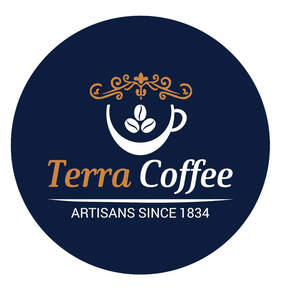
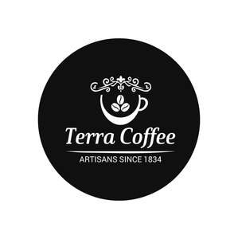

Trade Mark Journal No.2025/051 19 December 2025
UK00004309237 11 December 2025 (30,35,41,43)
Mark 1

Mark 2

- Class 30
- Coffee, cocoa; coffee or cocoa based beverages, chocolate based beverages, artificial coffee , Pasta, stuffed dumplings, noodles; Pastries and bakery products based on flour; desserts based on flour and chocolate; bread, simit [Turkish ring-shaped bagel covered with sesame seeds], poğaça [Turkish bagel], pita, sandwiches, katmer [Turkish pastry], pies, cakes, baklava [Turkish dessert based on dough coated with syrup], kadayıf [Turkish dessert based on dough]; desserts based on dough coated with syrup; puddings, custard, kazandibi [Turkish pudding], rice pudding, keşkül [Turkish pudding]; Turkish delight, gözleme [Turkish pastry], flatbreads , filo pastry, yufka [filo pastry sheets ],filo doughs, pancake; Honey, bee glue for human consumption, propolis for food purposes; Condiments for foodstuff, vanilla (flavoring), spices, sauces (condiments), tomato sauce, vinegar; Yeast, baking powder; Flour, semolina, starch for food; Sugar, cube sugar, powdered sugar; Syrup for food; Tea, iced tea; Confectionery, chocolate, biscuits, crackers, wafers; Chewing gums; Ice-cream, edible ices; Salt; Cereal-based snack food, popcorn, crushed oats, corn chips, breakfast cereals, processed wheat for human consumption, crushed barley for human consumption, processed oats for human consumption, processed rye for human consumption, rice; Molasses for food.
- Class 35
- Advertising; Business management; Business administration; Office functions; Business assistance relating to franchising; Advertising, marketing and public relations; organization of exhibitions and trade fairs for commercial or advertising purposes; design for advertising; provision of an online marketplace for buyers and sellers of goods and services; The bringing together, for the benefit of others, of a variety of goods, namely food and drink, Meat, fish, poultry and game, processed meat products, Dried pulses, Soups, bouillon, Processed olives, olive paste, Milks of animal origin, milks of herbal origin, milk products, butter, Edible oils, Olive Oils ,Dried, preserved, frozen, cooked, smoked or salted fruits and vegetables, tomato paste, Prepared nuts and dried fruits as snacks, Hazelnut spreads and peanut butter, tahini (sesame seed paste), Eggs and powdered eggs, Potato chips , Coffee, cocoa, coffee or cocoa based beverages, chocolate based beverages, artificial coffee , Pasta, stuffed dumplings, noodles, Pastries and bakery products based on flour, desserts based on flour and chocolate, bread, simit [Turkish ring-shaped bagel covered with sesame seeds], poğaça [Turkish bagel], pita, sandwiches, katmer [Turkish pastry], pies, cakes, baklava [Turkish dessert based on dough coated with syrup], kadayıf [Turkish dessert based on dough], desserts based on dough coated with syrup, puddings, custard, kazandibi [Turkish pudding], rice pudding, keşkül [Turkish pudding], Turkish delight, gözleme [Turkish pastry], flatbreads , filo pastry, yufka [filo pastry sheets ],filo doughs, pancake, Honey, bee glue for human consumption, propolis for food purposes, Condiments for foodstuff, vanilla (flavoring), spices, sauces (condiments), tomato sauce, vinegar, Yeast, baking powder, Flour, semolina, starch for food, Sugar, cube sugar, powdered sugar, Syrup for food, Tea, iced tea, Confectionery, chocolate, biscuits, crackers, wafers, Chewing gums, Ice-cream, edible ices, Salt, Cereal-based snack food, popcorn, crushed oats, corn chips, breakfast cereals, processed wheat for human consumption, crushed barley for human consumption, processed oats for human consumption, processed rye for human consumption, rice, Molasses for food, Mineral water, spring water, table water, soda water, Fruit juices and vegetable juices [beverages], fruit and vegetable concentrates for making beverages and non-alcoholic fruit extracts for making beverages, soft drinks, Energy drinks, protein-enriched sports beverages, coffee-based liqueurs, alcoholic coffee-based beverage, alcoholic beverages , wines, whisky, liqueurs, alcoholic cocktails,Non-electric household or kitchen utensils, included in this class, [other than forks, knives, spoons], services [dishes], pots and pans, bottle openers, flower pots, drinking straws, non-electric cooking utensils, cups, drinking glasses, Milk jugs, knives, forks and spoons, boxes, tea balls, filters, teapots, coffeepots, coffee machines, Coffee makers, and coffee grinders, enabling customers to conveniently view and purchase those goods, such services may be provided by retail stores, wholesale outlets, by means of electronic media or through mail order catalogues,; Retail services in relation to coffee; Wholesale services in relation to coffee; online retail services in relation to coffee.
- Class 41
- Education and training .
- Class 43
- Services for providing food and drink; restaurant services (food); cafes services; cafes, coffee shop services; cafeteria services, cafeterias, snack bar services; catering services.
VAHAP FIRAT
Representative: SMYRNA LTD